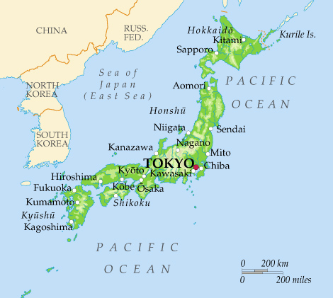
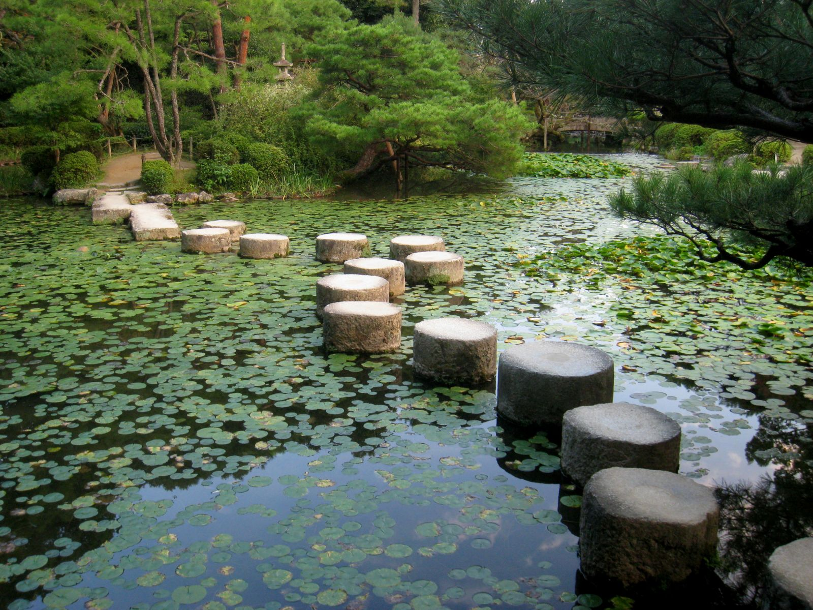
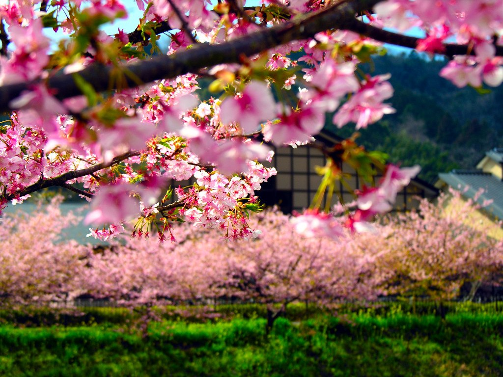
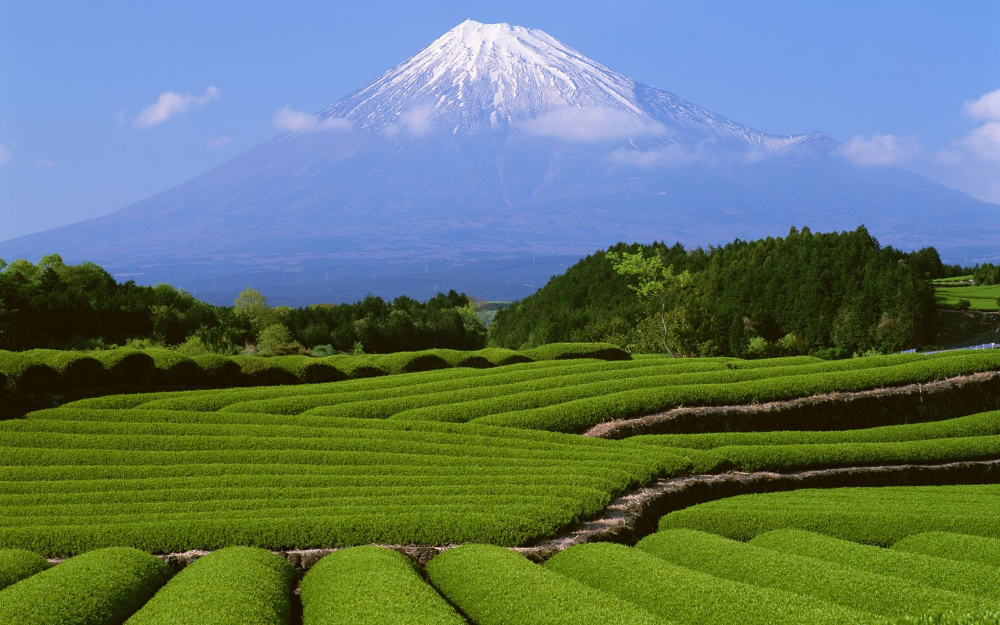
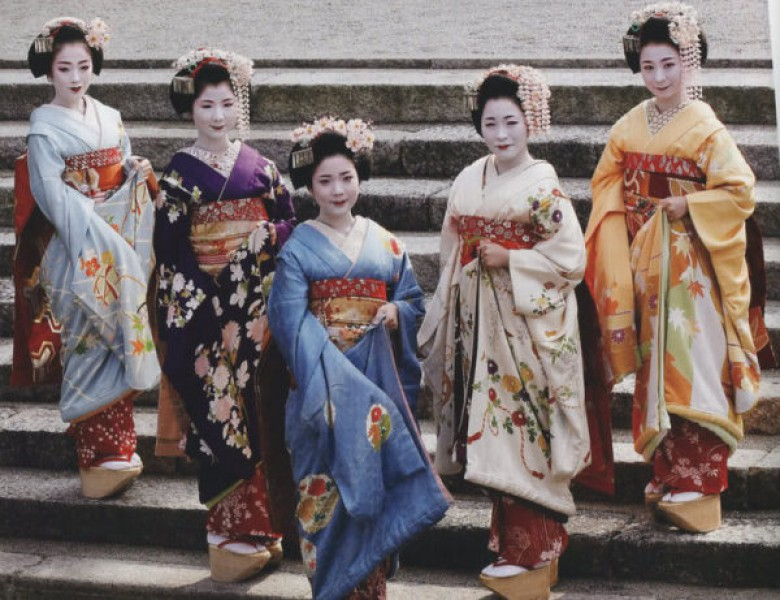

Япония. География, описание и характеристики страны

Территория Японии составляет около 370 тыс. квадратных метров, что позволяет ей занимать лишь 61-ую строчку в мировом рейтинге стран с самой большой территорией. Однако, количество проживающих на этой территории людей 129 млн. человек (по состоянию на 2015 год), ставит Японию среди самых густонаселенных стран мира. Страна занимает 10-ую строчку в списке стран по количеству проживающих людей.
- Географические характеристики
- Природа
- Далеко-далеко, за словесными.
- Далеко-далеко, за словесными.
- Далеко-далеко, за словесными.
Географические характеристики
Япония – островное государство. Оно расположено на 4 больших островах, названия которых знакомы всем любителям географии: Хонсю, Хоккайдо, Сикоку, Кюсю. Они составляют 98% территории страны. Остальные 2% приходятся на 3 тыс. маленьких и порой даже мелких островов. Для того, чтобы держать связь между разрозненными территориями, острова объединились с помощью системы мостов и тоннелей, прорытых под землей и под водой. Именно так в Японии было создано единое сухопутное пространство.
Природа
Горы и равнины

Страну Восходящего Солнца часто называют еще и страной крутых склонов. И это соответствует действительность. Подавляющее большинство (примерно 3/4) всех горных массивов страны слишком разрознены, чтобы их можно было осваивать. Контуры гор угловатые, с заостренными контурами. Исключение составляют лишь горные массивы, расположенные на юге Хонсю и Кюсю. Да и возле берегов острова Хоккайдо можно заметить плавные очертания горных массивов. Самые высокие горы, по аналогии с европейскими, носят название Японские Альпы. Они расположены в центре острова Хонсю, недалеко от Токио. Они достаточно высоки – вершины высотой в 3000 метров над уровнем моря тут не редкость. Благодаря своему внешнему виду и привлекательности они являются туристической достопримечательностью.
Реки и озёра
В Японии огромное количество рек. Их профили короткие и достаточно крутые. Из-за этого их использование для судоходства затруднено. Воды у этих рек чисты, прозрачны, в них водится много разнообразной рыбы. Три самые крупные японские реки носят название Синано, Исикари и Канто. Синано берет свое начало в Японских Альпах, течет более 360 км и потом впадает в Японское море. Исикари начинается в западной части острова Хокайдо, течет практически такое же расстояние и также питает своими водами Японское море. Что касается Канто, то они проходит через равнину Канто и впадает в Токийский залив, а потому опосредованно можно говорить о том, что она впадает непосредственно в Тихий океан.
Моря и океан, омывающие Японию

Территория страны щедро омывается различными морями и океанами. На востоке и юге ее острова находятся во власти Тихого океана. На западе находятся побережья Восточно-китайского и Японского морей, а на Севере Охотское море.
Растения и животные Японии
В Японии можно встретить очень много различных видов флоры и фауны. Это является следствием того, что тут очень благоприятных для их проживания климат, достаточно высокая влажность. Плюс островная изоляция страны делает свое дело. Особенностью растительного и животного мира является тот факт, что тут часто можно встретить эндемиков – животных, которые проживают только в этой части земного шара. Да и леса составляют 60% территории страны, что только способствует развитию животного и растительного миров. Из растений распространены камфорные лавры, дубы и камелии, можно также встретить бамбук и гинкго. Их животных особый интерес представляют японские макаки, енотовидные собаки, белозубки, летяги и бурундуки, медные фазаны.
Климат Японии

Климат страны можно обозначить, как мягкий и влажный. Зимой температура редко опускается ниже нулевой отметки. Сильные холода – большая редкость, однако в Северной Японии можно встретить снег, который, однако, довольно быстро тает. Времена года в природе более менее выражены, а особенно красиво весеннее цветение сакуры.
Ресурсы
Природные ресурсы Японии
У страны очень низкий ресурсный потенциал. Практически все природные ресурсы – в большом дефиците, и прежде всего минеральные. И хоть различные виды полезных ископаемых присутствуют в стране, то запасы этих ресурсов минимальны, а потребности у подобных стран велики. Поэтому практически все полезные ископаемые страна вынуждена импортировать из соседних государств, более щедро наделенных природой.
Промышленность и сельское хозяйство Японии

Япония - уникальная страна. Ведь несмотря на зависимость от импортируемых ресурсов, промышленный подход к производству, как и сам потенциал огромен. Так развитие получила черная и цветная металлургия, машиностроение (японские авто известны во всем мире как пример надежности), судостроение. Возводится множество жилых и административных объектов, химическая и нефтехимическая промышленности находятся на пике своего развития. Больших достижений страна достигла в области цифровых технологий. Что касается сельского хозяйства, то на почвах, на которых не растет вообще ничего, японские аграрии, используя современные технологии, выращивают овощи и фрукты в достаточно больших количествах.
Культура
Народы Японии
Культурный пласт страны очень оригинален и неповторим. Японцы придерживаются древних традиций, таких как чайная церемония, кимоно и гейши – таких явлений нет ни в одной другой стране мира. В Японии две основные религии – синтоизм и буддизм, а сам народ, довольно гостеприимен, хоть и проявляет характерную сдержанность в проявлении каких-либо эмоций.